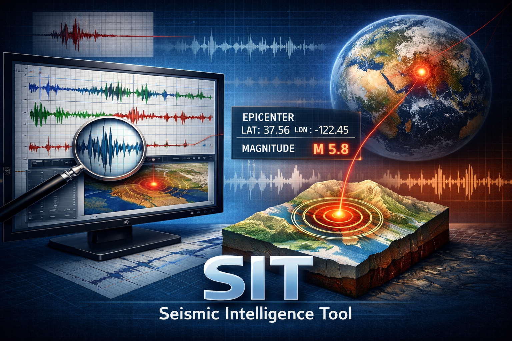

SIT is a software platform for advanced seismic signal analysis and earthquake investigation.
The system allows seismologists to inspect waveforms, identify P and S phases and determine earthquake parameters using interactive analysis tools.
Multi-station waveform visualization allows detailed inspection of seismic arrivals and signal characteristics.